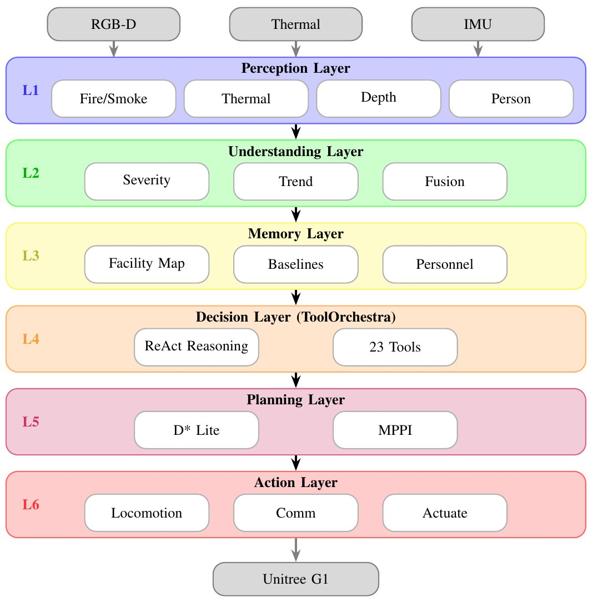
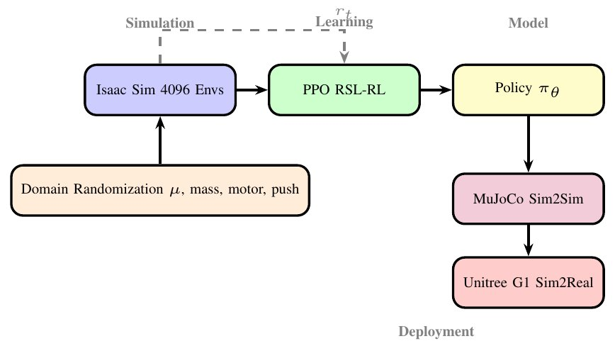
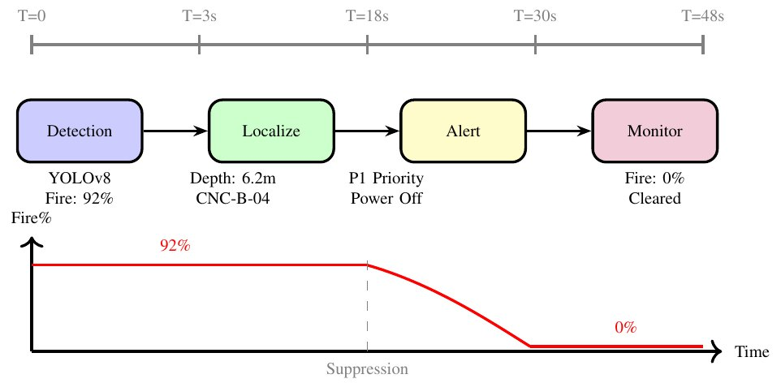
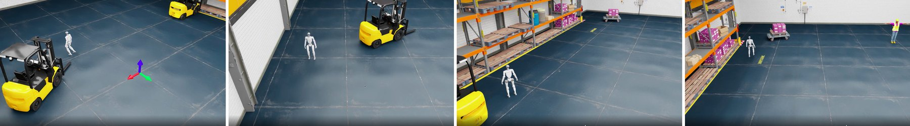
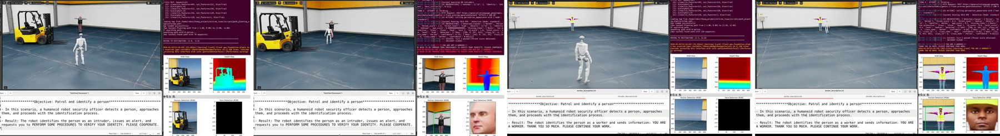
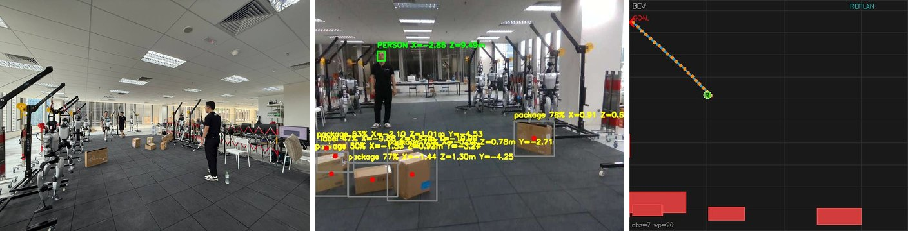
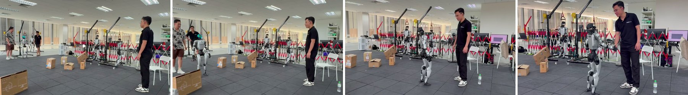

Preprint 2026
SafeGuard ASF
SR Agentic humanoid robot system for autonomous industrial safety
Strike Robotics · PAIRS Lab
01 · Abstract
A humanoid that patrols the dark factory
Unmanned "dark factories" run without people on site, so they need safety systems that can detect and respond to several kinds of hazard on their own. Fixed cameras and sensors leave blind spots and cannot go and check.
SafeGuard ASF (Agentic Security Fleet) deploys humanoid robots for autonomous hazard detection. It combines RGB-D perception, a ReAct-based agent that reasons and calls tools through the ToolOrchestra framework, and learned locomotion policies on the Unitree G1. It handles three hazards: fire and smoke, abnormal pipeline temperature, and intruders in restricted zones.
Locomotion policies, including motion tracking and velocity control, are trained with PPO in Unitree RL Lab and validated sim-to-sim before deployment. The system is tested in Isaac Sim and on a real G1: autonomous patrol, human detection and tracking, obstacle avoidance and approaching a person.
02 · Demos
SR Agentic on the Unitree G1
Real-robot and simulation runs of the SR Agentic stack, from the Strike Robot team. Each clip links to its original post.
03 · System
Six layers from sensors to actions

- L1
Perception
YOLOv8 fire and smoke detection, thermal monitoring, depth localization and person detection with Re-ID.
- L2
Understanding
Fuses detections to estimate hazard severity and predict how it evolves.
- L3
Memory
Facility map, thermal baselines per inspection point, and a database of authorized personnel.
- L4
Decision: ToolOrchestra
A ReAct agent loops thought, tool call and observation over perception, reasoning, knowledge and actuation tools.
- L5
Planning
D* Lite global waypoints and MPPI local trajectory optimization.
- L6
Action
Velocity-command locomotion policies, alerts to the control center and spoken warnings.

04 · Hazard scenarios
Fire, overheating pipes and intruders
Fire and smoke
Detect with a fine-tuned YOLOv8-m, estimate severity, localize in 3D, alert and trigger suppression, then monitor until it is out.
Abnormal pipeline temperature
Compare thermal readings with the stored baseline, follow the temperature trend, and trace the hot spot to its root cause, such as a stuck valve.
Intruder in a restricted zone
Detect people with YOLOv8-n and check them against authorized personnel by OSNet re-identification before raising an alert.

05 · Results
Detection, response time and compute
Limitations reported in the paper: few real-world scenarios so far, a single robot without fleet coordination, no physical manipulation (valves and suppression are actuated remotely), and edge-compute limits. In simulation, most failures came from missed detections in dispersed smoke.
06 · Simulation and real world
From Isaac Sim to a real G1




07 · Cite
Citation
@misc{canh2026safeguard,
title = {SafeGuard ASF: SR Agentic Humanoid Robot System for Autonomous Industrial Safety},
author = {Canh, Thanh Nguyen and Tran Viet, Thang and Tran, Thanh Tuan and Lim, Ben Wei},
eprint = {2603.25353},
archivePrefix = {arXiv},
year = {2026}
}